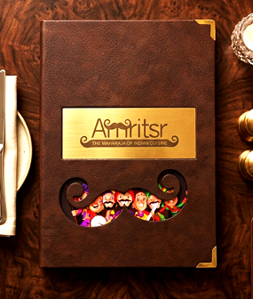
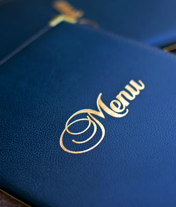

Distinctive Brand Presentation
Create a bar menu that reflects your venue's unique personality through customized materials, colours, textures, logo treatments, and carefully selected finishes.

CUSTOM BAR & BEVERAGE MENU COLLECTION
Create a distinctive beverage presentation with premium Bar & Drink Menus designed for cocktail bars, lounges, pubs, restaurants, hotels, resorts, and modern hospitality venues. From sophisticated cocktail menus and elegant wine lists to complete beverage collections, Fine Fold Menus creates customized menu solutions that combine premium materials, refined printing, personalized branding, and practical functionality. Each menu is thoughtfully crafted to complement your venue's atmosphere, showcase your drinks collection, and create a memorable impression from the moment your guests begin exploring your offerings.

Why Choose Premium Bar Menus?
A thoughtfully crafted bar menu does more than display beverage names and prices. It strengthens your brand identity, helps guests explore your collection, and brings a professional finishing touch to your service.
Create a bar menu that reflects your venue's unique personality through customized materials, colours, textures, logo treatments, and carefully selected finishes.
Present cocktails, wines, spirits, mocktails, and signature beverages in well-organized sections that make your drinks collection easier to browse and understand.
Select menu covers, page formats, and materials suited to regular handling in busy bars, lounges, restaurants, and hospitality environments.
Make your drinks menu a natural extension of your venue's atmosphere with a refined presentation that complements your interiors, table setting, and overall brand image.
Bar & Drink Menu Collection
Every hospitality venue has a different beverage offering and presentation style. Fine Fold Menus creates customized menu formats for everything from curated cocktail collections to extensive wine lists and complete bar menus.
Showcase classic cocktails, signature creations, and seasonal selections through stylish menu covers designed to complement your cocktail bar's concept. Personalized branding, thoughtful page layouts, and premium finishes bring character to every presentation.
Present curated wine selections in an elegant and organized format. From compact wine lists to extensive collections, customized wine menu books can combine refined cover materials, professional printing, and clearly structured pages.

Create a sophisticated presentation for whisky, gin, rum, vodka, and other premium spirit collections. Choose distinctive cover materials, personalized finishes, and practical formats that complement your bar's identity.

Organize mocktails, fresh juices, speciality coffees, teas, soft drinks, and other beverages in a professional menu format. Ideal for restaurants, cafés, hotel lounges, and venues with diverse beverage offerings.

Keep seasonal cocktails, promotional drinks, and changing beverage selections organized with menu covers designed for replaceable pages or inserts. Depending on the selected format, specific sections can be updated while maintaining the original branded cover.
FINE FOLD MENUS
Complete Menu Customization
Your bar menu should feel like a natural extension of your brand. At Fine Fold Menus, we offer a range of customization possibilities to help create a distinctive presentation suited to your interiors, beverage collection, and service requirements.

Choose from selected materials such as PU leather, genuine leather, wood, MDF, acrylic, and other available specialty finishes to create a menu cover that complements your venue's style.
Select portrait, landscape, compact, or multi-page menu formats according to your drinks collection, table space, and preferred presentation style.
Incorporate your brand identity through suitable techniques such as logo embossing, debossing, foil stamping, UV printing, or laser engraving, depending on the chosen material.
Explore suitable binding options, including screw binding, ring binding, Wire-O formats, and replaceable insert systems, according to your menu's structure and updating requirements.
Enhance your menu with professional interior printing, carefully selected paper options, coordinated colours, textures, and decorative finishing details that complement your overall brand presentation.
Ideal Applications
Our customized Bar & Drink Menus are suitable for hospitality businesses that want their beverage presentation to reflect the quality, atmosphere, and identity of their venue.
FINE FOLD MENUS
Bar & Beverage Menu Applications
Different beverage collections require different presentation styles. Our customized menus can be designed to organize individual drinks categories or bring an entire beverage offering together in one coordinated format.
FINE FOLD MENUS
Designed for Style & Practicality
A bar menu moves between tables, passes through different hands, and remains part of the guest experience throughout service. Its design should therefore consider more than appearance. The size, cover material, binding method, page arrangement, and finish all contribute to how comfortably the menu can be handled and used.
At Fine Fold Menus, we create bar and drink menu solutions that bring these elements together in a coordinated presentation. From compact cocktail menus to extensive wine and spirits collections, each format can be developed around the content you need to display and the atmosphere you want to create.
For venues that frequently refresh their drinks collection, selected changeable formats can also accommodate updated pages or inserts. For areas where moisture and spills are common, suitable protective or waterproof menu options can be considered according to the intended environment.
The result is a professional beverage menu that supports your service requirements while maintaining the visual identity of your hospitality brand.
Features & Benefits
Our customized bar and drink menu solutions combine functional design choices with premium presentation details to create menus suited to modern hospitality environments.
FINE FOLD MENUS
A Bar & Drink Menu is a professionally designed menu used to present cocktails, wines, spirits, mocktails, beers, and other beverages. At Fine Fold Menus, these menus can be customized with different cover materials, branding details, printing styles, and page formats to suit your hospitality business.
Yes. You can personalize your bar menu with your logo, brand colours, preferred materials, textures, and suitable finishing techniques such as embossing, debossing, foil stamping, UV printing, or laser engraving.
Depending on your preferred design and application, menu covers can be developed using materials such as PU leather, genuine leather, wood, MDF, acrylic, and selected specialty materials. Our team can help you explore suitable options for your venue.
Yes. Bar and drink menu solutions can be customized for individual beverage categories, including cocktail menus, wine lists, whisky collections, spirits menus, mocktails, and complete beverage selections.
Yes. If you choose a suitable changeable menu format, selected pages or inserts can be replaced when your beverage collection, pricing, seasonal offerings, or promotions change.
Fine Fold Menus offers waterproof NTR menu solutions that may be suitable for selected beverage service environments. Material choice should be based on where and how the menu will be used, as not every menu cover material is waterproof.
Yes. Menu dimensions, orientation, binding methods, and page arrangements can be customized according to your content, preferred appearance, and operational requirements.
You can enquire about coordinated menu manufacturing for multiple bars, hotel outlets, restaurants, or hospitality locations. Share your required quantities, formats, branding details, and delivery requirements to discuss suitable production options.
FINE FOLD MENUS
Every great hospitality experience is built around thoughtful details, and your drinks menu is one of them. Give your cocktails, wines, spirits, and signature beverages a presentation that reflects the quality and personality of your venue.
At Fine Fold Menus, we create customized Bar & Drink Menus with premium materials, professional printing, personalized branding, and practical design solutions. Whether you're launching a new cocktail bar, refreshing your beverage collection, or developing coordinated menus for multiple hospitality locations, we help you create a presentation that feels distinctly yours.